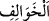

“Allah’a inanın,” Allah’ın dinini aziz kılmak ve kelimesini yüceltmek (i’lâ-yı
kelimetullah) için “Rasûlü ile beraber cihad edin!” diye” Kur’ân’dan “bir sûre
indirildiği zaman içlerinden servet” güç, kuvvet “sahibi olanlar, senden izin
istediler.”
“Servet sahibi olanlar (ülü’t-tavl)” ifadesi ile servet sahibi, gerek beden gerekse mal
yönünden cihad etmeye muktedir olan münâfıklar kastedilmektedir.
Haddâdî demiştir ki: “Aslında “__WORD__”, düşmanlara uzanıp onlara galip gelmeyi
mümkün kılan üstünlük, demektir.
Fahreddin Râzî de Nisâ Sûresi’nin tefsirinde şöyle demiştir: “et-Tavl” kelimesinin
aslı, kısanın zıddı olan “ __WORD__ (uzunluk)” kelimesinden gelmektedir. Çünkü bir şey kısa
olduğu zaman onda kusur ve noksanlık olduğu gibi bir şey uzun olduğu zaman onda
mükemmellik ve ziyadelik var demektir. Zengin insana da “tûl” adı verilmiştir. Çünkü
tıpkı kısa iken ulaşamadığı bazı şeylere uzun olduğunda ulaşabilmesi gibi fakirken elde
edemediği birçok isteklerine zenginliği sayesinde ulaşmaktadır.
“Bizi bırak,” mazeretleri sebebiyle savaşa gidemeyip “oturanlarla beraber
oturalım.” dediler.”
87. Geride kalan kadınlarla beraber olmaya râzı oldular, kalpleri mühürlendi,
artık onlar anlamazlar.
Münâfıklar, kocaları gittikten sonra “geride” ev ve mahallelerinde “kalan kadınlarla
beraber olmaya” onlar gibi oturmaya “razı oldular.”
“ __WORD__ ” kelimesinin tekili olan “__WORD__” kelimesinin “hayırsız kişi” mânâsına
geldiği de söylenir. Kendisinde hayır olmayan kişiye “hâlife” denilmesinin sebebi,
belki de onun davet edildiği önemli işlere icabet etmemesi, geri kalması yüzündendir.
“Kalpleri mühürlendi.” Haddâdî demiştir ki: “ __WORD__ (mühürlemek)” kelimesinin
lügatteki mânâsı, bir şeyi kalıp haline getirmektir. Mesela dînarın tab’edilmesi,
dirhemin tab’edilmesi gibi. el-Mesâdır adlı eserde de denmiştir ki: Terkib, bir şeyin
kendisinde son bulduğu, orada bittiği sınır ve son mânâsına delalet eder. İnsanın tab’ı,
tabiatı, tıbâ‘ı yani ona göre yaratıldığı seciyesi de buna kıyas edilir.
Âyette özellikle kalbin mühürlendiği söylenmiştir. Çünkü kalp, anlama mahallidir.
Bundan dolayıdır ki Allah Teâlâ “Artık onlar anlamazlar.” buyurmuştur. Yani o
münâfıklar, Allah’a îmanın, O’nun emir ve yasaklarına itaat etmenin, Rasûl’e (a.s.)
muvâfakat göstermenin ve Allah yolunda cihad etmenin insana kazandırdığı saâdeti ve
bunların aksini yapmanın insana getireceği bedbahtlığı anlamazlar.